Workshop 17: Model assumptions
Lecture review
- Parametric models (t-test, ANOVA, linear regression) make assumptions about their input (the data_.
- Assumptions related to the normal distribution
- data must be continuous
- observations must be independent and identically distributed
- The normal distribution is assumed because of the central limit theorem
- Homogeneity of variance
- Linearity: continuous predictors must be linear
Learning outcomes
This workshop, along with the lecture on model assumptions should give you the opportunity to be able to
- name central properties and aspects of the normal distribution.
- understand the conceptual idea of the central limit theorem.
- use basic simulations in R to understand both.
For revision of central limit theorem and normal distribution see Matloff (2019) chapter 9.7 and Baguley (2012) chapter 2.4.1
Setup
You need the package psyntur:
library(psyntur)
packageVersion("psyntur") # should be version 0.0.2## [1] '0.0.2'Normal distribution
To draw out a normal distribution, all we need to know is its mean and its standard deviation.
Simulate normal distributed data
The function rnorm allows us to randomly sample normal distributed data (r=random, norm=normal). The function takes three parameter values, i.e. the number of samples n, the mean, and the standard deviation sd.
Create random distributed data:
n <- 5 # Number of obervations to be sampled.
mean <- 500 # True population mean of the distribution.
sd <- 100 # True population sd of the distributions
x <- rnorm(n = n, mean = mean, sd = sd)These are our randomly sampled observations.
x## [1] 443.9524 476.9823 655.8708 507.0508 512.9288Aside, functions like rnorm allow us to control population parameters. In reality we rarely know the population mean, say, the average time it takes to recover from COVID, but we can estimate it from large enough samples. These population parameters are conventionally indicated with Greek letters, i.e. called \(\mu\) (mu; the population mean) and \(\sigma\) (sigma; the population standard deviation).
Plot the “fake” data from above.
histogram(x, data = NULL)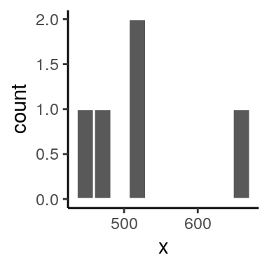
Here are the mean of the sample:
mean(x)## [1] 519.357and the standard deviation of the sample:
sd(x)## [1] 81.10218Note, your values will be slightly different from mine because we take random samples.
Questions
Question 1
Are these data in the histogram normal distributed? Why do you think they are (or are not) normal distributed?
Answer: In theory yes (we know that rnorm is generating normal distributed data); in practice no, the distribution of the data is almost uniform. Reasons: the plot doesn’t show the characteristic bell curve because the sample was very small (n=5).
Question 2
Compare the sample mean and the sample standard deviation to our population mean and population variance. Are they different? Remember, we are in the almost unique sitation to know the population parameters. Why do you think are the sample mean and standard deviation different from the population mean and standard deviation?
Answer: The sample mean and standard deviation are different from their population values. They are different because our sample was not normal distributed / sample was too small (n=5).
Tasks
Task 1
Create a histogram with sample size n=1000. Run the code. What changes did you make in the code? How has the histogram changed? Calculate the sample mean and sd again. How did they change?
Task 2
Create a histogram with sample size n=1000 and a sd of 10. What changes did you make in the code? How has the histogram changed? Calculate the sample mean and sd again. How did they change?
Task 3
If we know the population mean and population variance, we know everything we need to know to create data we would be expected under the normal distribution. Let’s do this for IQ which has a population mean of 100 and a population sd of 15. Use an n of 1000 samples and plot a histogram of IQ.
The area under the curve
Let’s continue with the IQ example from the lecture. We know the population values, which is extremly handy. Here is a density plot of IQ with a mean of 100 and a sd of 15. This should look similar to your plot from task 3. Except instead of counts / frequency, the density plot describes the relative likelihood of IQ values.
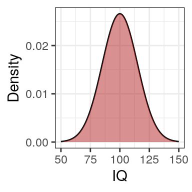
Remeber, the area underneth the curve must sum to 1. In other words the likelihood of an observation to take on an IQ of any value under the curve is 1 (or 100%). The likelihood of a value to be outside this area is 0 (%). Those are the extremes.
We can now use the pnorm (probability normal) function to calculate areas underneath the curve. Again, we take the population means of IQ.
mean <- 100
sd <- 15Say we want to know the probability of observing a person with an IQ below 100 which is the red shaded area in the density plot:
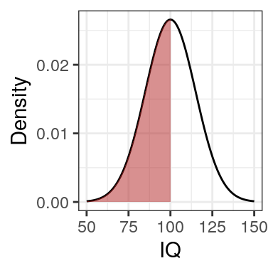
pnorm(100, mean = mean, sd = sd)## [1] 0.5In other words, 50% (0.5) of the population have an IQ below 100.
Tasks
Task 1
Calculate the probability of observing a person with an IQ below 75 corresponding to the area shaded in this plot:
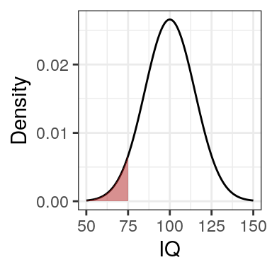
pnorm(75, mean = mean, sd = sd) # Answer## [1] 0.04779035Task 2
Calculate the probability of observing a person with an IQ above 75 corresponding to the area shaded in the plot below. Remember the entire area underneth the curve sums to 1 (100%).
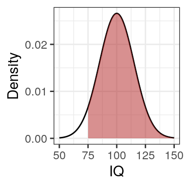
1 - pnorm(75, mean = mean, sd = sd) # Answer: we can us 1-pnorm() because the area under the curve sums to 1 ## [1] 0.9522096Task 3
Calculate the probability of observing a person with an IQ between 95 and 110 corresponding to the area shaded in the plot below.
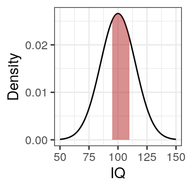
As an example, here is the probability of observing a person with an IQ between 75 and 95
pnorm(95, mean = mean, sd = sd) - pnorm(75, mean = mean, sd = sd)## [1] 0.321651which is the probability of observing a person with an IQ below 95
pnorm(95, mean = mean, sd = sd)## [1] 0.3694413but removing the probability of observing a person with an IQ below 75
pnorm(75, mean = mean, sd = sd)## [1] 0.04779035Task 4
Calculate the probability of observing a person with an IQ between 99.9 and 100.1 corresponding to the area shaded in the plot below.
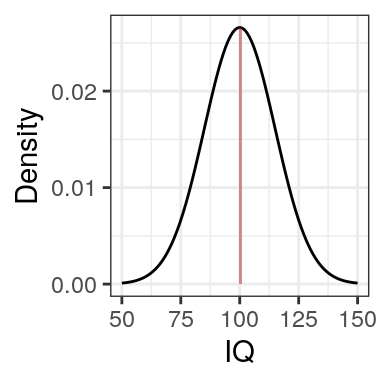
pnorm(100.1, mean = mean, sd = sd) - pnorm(99.9, mean = mean, sd = sd) # Answer## [1] 0.005319191Notice that even though the population mean is 100, the likelihood of observing a person with an IQ between 99.9 and 100.1 is almost 0 (0.5%). This is a property of continuous distributions; the probability of observing a specific value like exactly 100 is leaning towards 0 (i.e. almost impossible).
Task 5
Calculate the probability of observing a person with an IQ of below 60 or above 140; see the area shaded in the plot.
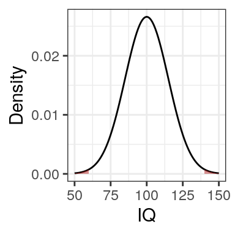
pnorm(60, mean = mean, sd = sd) + (1 - pnorm(140, mean = mean, sd = sd)) # Answer## [1] 0.007660761Task 6 (bonus)
Calculate the probability of observing a person with an IQ two standard deviations below or above the mean (see plot). Reminder the population mean of IQ is 100 and its standard deviation is 15.
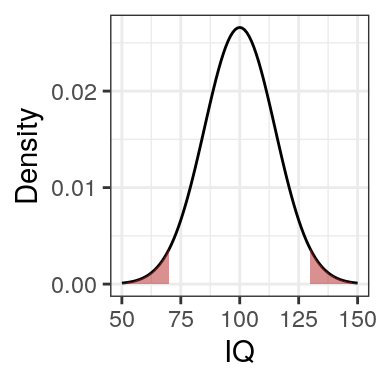
lower_tail <- mean - (2*sd)
2 * pnorm(lower_tail, mean = mean, sd = sd) # Answer: we can do this because the distribution is symmetric## [1] 0.04550026Central limit theorem
We know that the central limit theorem works if the samples approaches infinity (or is at least large enough) and the samples and independent and identially distributed (iid; see lecture). The central limit theorem states that the sampling distribution will approach normality when the sample size increase, regardless of the shape of the distribution we are sampling from.
Let’s look at the depression example from the lecture. The CES-D scale for self-report depression (Radloff, 1977) contains 22 items. Say we ask participants to indicate on a 5-point Likert scale to what extent they agree with each of the 22 statements (1 = strongly disagree – 5 = Strongly agree).
- Item 1: I was bothered by things that usually don’t bother me.
- Item 2: I had a poor appetite.
- Item 3: I did no feel like eating, even tohugh I should have been hungry.
- …
- Item 22: I didn’t enjoy life.
Questions
Question 1
What type of data are the responses to each item?
Answer: Ordinal / categorical / nominal but not continuous.
Question 2
Are responses to these items are normal distirbuted? Why (or why not)?
Answer: No. There are 5 response categories that have an implicit order (ordinal response). Because - limited response options - bound between an upper and lower limit - inherently order - the liklihood of responses betweeen, say, 1 and 2 is not defined - response categories are not equidistant – the psychological distance between strongly disagree and moderately disagree might be different in the head of the participant than the distance between moderately agree and strongly agree.
Simulation
We will see now, why we can still use linear-regression models that assume normally distributed data, even though the data we obtain are not normal distirbuted.
Task 1
First we need to define the response options available to the participant.
# response options
response <- 1:5 # people can only respond with a number from 1 to 5
# Check out the vector
response # numbers from 1 to 5 (easy)## [1] 1 2 3 4 5We can use sample to take random samples from response. Try out; there is a \(\frac{1}{5}\) chance the number you obtained is the same as mine. Do you know why?
sample(response, size = 1) # Sample 1 random number between 1 and 5## [1] 4What’s the code for sampling 2 random numbers?
Task 2
To sample more than 5 random numbers we need to set replace = TRUE to allow the same number to be sample more than once (called sampling with replacement).
sample(response, size = 6, replace = TRUE) # Sample 6 random numbers between 1 and 5## [1] 1 2 3 5 3 3Remember that the depression scale above has 22 items. So if we want to simulate one participant who responds to every of the 22 items (at random), what would you need to change size to?
Task 3
You probably worked out in Task 3 that size has to be 22. Lets save the result in ppt_1.
ppt_1 <- sample(response, size = 22, replace = TRUE) # Simulate one participantLet’s plot these data to see how they are distributed. Use histogram() and set data to NULL (cause we don’t use a data frame) and set x to ppt_1.
# create histogram of ppt_1histogram(data = NULL, x = ppt_1) # answer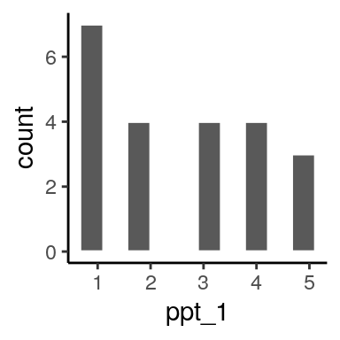
Is this distribution normal? Why or why not?
Answer: No the distribution is not normal for the same reasons as above (not a continuous but an ordinal variable).
Task 4
We’ve seen how we can sample random data for one participant that answers all 22 depression items. Now, lets demonstrated the central limit theorem. Remember that the central limit theorem states that we will arrive at a normal distribution if our sample is approaching infinity (or a large number) regardless of the shape of the distribution we’re sampling from.
We don’t learn much from sampling data for one fictive participant. We can use the replicate function to do the same for 2 participants.
replicate(2, sample(response, size = 22, replace = T))## [,1] [,2]
## [1,] 5 1
## [2,] 5 2
## [3,] 3 4
## [4,] 1 5
## [5,] 2 5
## [6,] 5 3
## [7,] 5 1
## [8,] 4 4
## [9,] 5 1
## [10,] 2 1
## [11,] 1 3
## [12,] 1 4
## [13,] 3 1
## [14,] 1 3
## [15,] 5 5
## [16,] 1 3
## [17,] 2 2
## [18,] 4 5
## [19,] 4 5
## [20,] 3 3
## [21,] 1 2
## [22,] 2 2What’s the code to do the same for 10 participants?
Let’s save the data for two participants in two_ppts and calculate the means for each column (i.e. participant) using colMeans.
two_ppts <- replicate(2, sample(response, size = 22, replace = T))
two_ppts_means <- colMeans(two_ppts)Here is a histogram of two participant means:
histogram(data = NULL, x = two_ppts_means)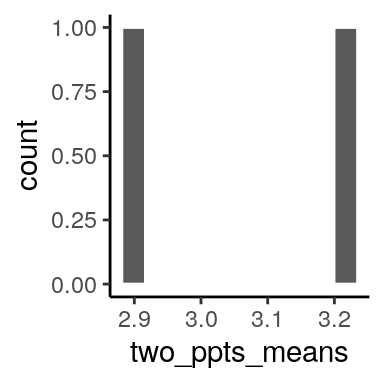
This was good but still not very impressive. Get a histogram for 10, 100 and then 1000 fictive participants.
Share the plot that you think shows a normal distribution best in your Teams chat:
To share your plot: Click on Export in the Plots panel, then Copy to Clipboard ... and Copy Plot, then go to your Teams chat, click in the chat box and click CTRL + V to insert the plot.
Task 5 (bonus)
You feel the previous task wasn’t challenging enough? Try to do the same histogram of the sampling distribution again but instead of means, use total; i.e. replace colMeans with colSums. The central tendency theorem works not just for means but also for totals and even for standard deviations.
Summary
Congratulations, you just
- simulated normal distributed data
- learned how to use means and standard deviations to calculate the likelihood of observing values
- used a simulation to create a sampling distribution from a sample of non-normal distributed data and
- demonstrated the central limit theorem.
References
Baguley, T. (2012). Serious stats: A guide to advanced statistics for the behavioral sciences. Macmillan International Higher Education.
Matloff, N. (2019). Probability and statistics for data science: Math + R + data. CRC Press.
Radloff, L. S. (1977). The CES-D scale: A self-report depression scale for research in the general population. Applied Psychological Measurement, 1(3), 385–401.